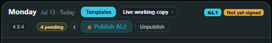
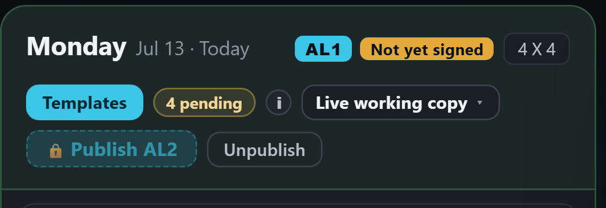
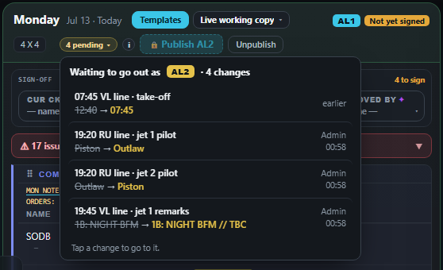
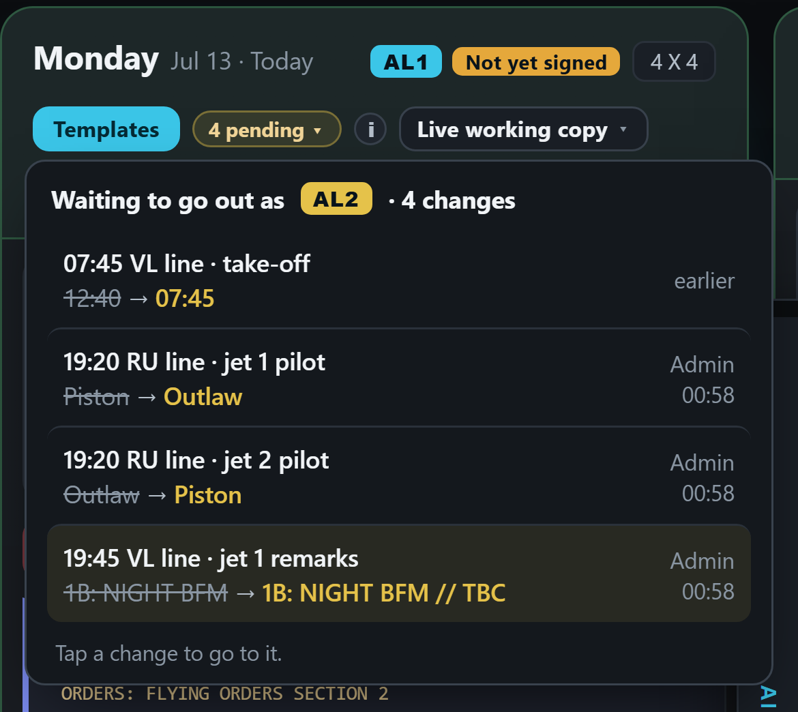
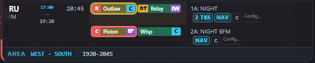
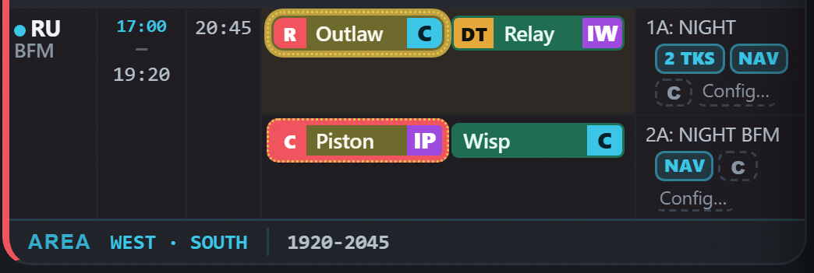

Monday in the real app, at AL1, with four changes waiting: one from the demo, three made just now (Piston and Outlaw swap seats on the 19:20 RU line; a remark on the 19:45 VL line). The list is laid on top of the real screen; nothing in the app was changed.






The list shows only what will actually go out — the difference from the published version; a change you made and put back is not on it. Who and when: today the app knows them only for changes made since the page was opened, and only as the shared account (“Admin”); the older change reads “earlier”. With the database, each change carries the person’s own callsign and the time, however long ago it was made.